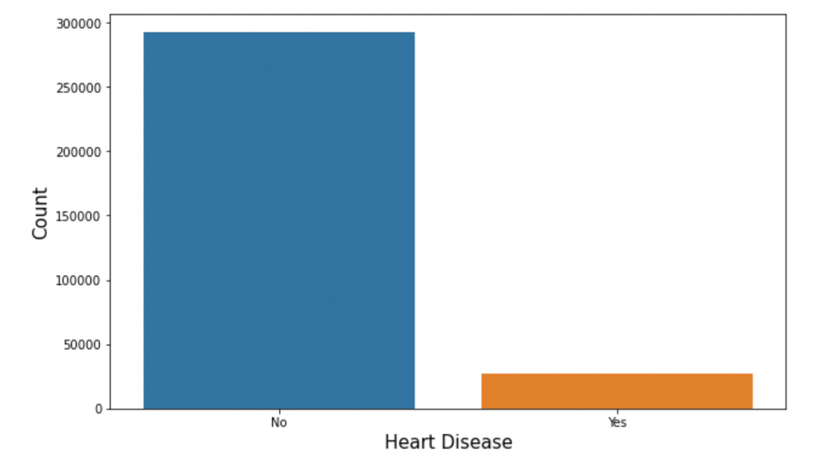
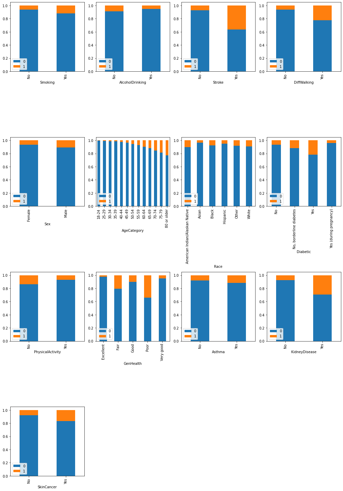
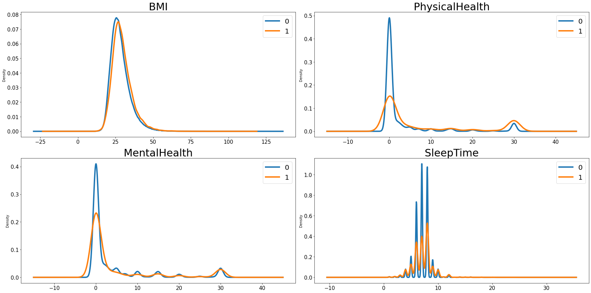
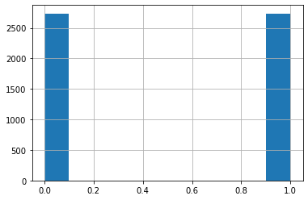

Project Description
In this project, we downloaded heart disease data from Kaggle,the original data come from 2020 annual CDC survey data of 400k adults related to their health status. The data available on Kaggle contains over 300,000 records and 18 selected columns from the original data source, which includes Heart Disease Condition, BMI, Age, Mental Health among others. We plan to use this data build a predictive model to diagnose whether the person has heart disease. This is a binary classification problem, we first tested several classification models and based on the classification accuracy choosing the most appropriate one on this dataset. In the second part, we discussed the effect of building a model combination using voting to make classification. More details about the dataset can be found on the Kaggle site, here.
Data Preview
Explanatory Analysis
Target variable
From the count plot above, we can see that this dataset is extremely unbalanced. There are only less than 1% of the observations in our dataset have heart disease. If we use this dataset directly, it's highly possible that the classification accuracy for our models are high due to this asymmetry; however, this high accuracy cannot reflect our model performance truthfully. So, we will construct a balanced dataset to fit our models.
Predicting Predictors
To visually see how the predicting variables in the dataset might affect the number of people having heart disease, we first divided our predictors into categorical ones and numeric ones. For the categorical variables, we made a frequency plot; and for the numeric ones, we made a density plot to show its potential impact.
From the bar plot above, we can see that for most of the categorical predictors, there's a clear difference of the fraction of people having heart disease within each catrgory respectively. For example, there seems to have a positive relationship between age and heart disease. And if the person has other disease, for instance stroke, or kidney disease, the possibility of having heart disease seems to be higher than healthy people.
We have four numeric variables in the dataset, from the density plot, we can see that people have a higher BMI tends to have a higher ratio of having heart disease. The relationship between physical health, mental health and sleep time with the the probability of having heart disease looks like negative.
Data Preprocess
Undersampling to construct balanced dataset
Due to the restrictions of our laptop's processing power, we only selected about 5000 records to train our models in this study. First, we randomly select 1% of the data from the group of people having heart disease, and using the undersampling technique to build a balanced dataset for the following study.
Create dummy variables and train-test split
We used one hot encoding to convert all of the categorical variables in our dataset into a form to make sure our machine learning model could do a better job in classification. Then from the data we selected, we filtered out 25% of the data as testing sample to compare the model performance.
Classification Models
We built five individual classfication models to making predictions. For each model, we used grid search(randomized search to increasing searching speed for Random Forest) to find the optimal parameters, recorded the training accuracy, validation accuracy and computing time when training the model. And tested our model on the the 25% of data we left out to find the testing accuracy. Finally, we combined several models together using voting technique can discussed the results of using the combined model for classification.
| Models | Training Accuracy | Validation Accuracy | Parameters | Training Time | Testing Accuracy |
| KNN | 0.9998 | 0.7347 | k=84 | 142.1403 | 0.7421 |
| SDG(loss=log) | 0.7603 | 0.7554 | α=0.0041 | 3.5986 | 0.7523 |
| Random Forest | 0.7931 | 0.7407 | max_depth=8 max_features=7 n_estimators=79 |
56.1054 | 0.7538 |
| Gradient Boosting | 0.7830 | 0.7587 | max_depth=3 max_features=10 |
21.2660 | 0.7816 |
| Support Vector Machine | 0.7854 | 0.7592 | C=0.5 gamma=0.1 |
1061.3845 | 0.7830 |
- As we can see from the output above, except from the logistic classification, the testing scores for the rest four models are actually higher than the validation score. We think this might happen because in the training step, each time, we only use part of the training set to fit the model and validate using the data left behind. However, in the testing step, we used the whole training sample to fit our model. With more data to fit the model, it's possible to have better accuracy.
- Based on the testing accuracy, we should choose SVM to make the classification for this dataset. However, it took the longest in the training stage. And that is the time required for training on 1% data of the original dataset. Next-best is the Gradient Boosting model, with an accuracy of 0.7816 and a much shorter computing time. This has brought us to think that if we combine the other algorithms that run faster than SVC with the Gradient Boosting model using soft voting, can we find a combination that will beat the Support Vector Classifier? The results are listed below.
| Models Combo(2) | Testing Accuracy | Model Combo(3) | Testing Accuracy |
| GBC+KNN | 0.7706 | GBC+KNN+Logit | 0.7779 |
| GBC+Logit | 0.7772 | GBC+KNN+Forest | 0.7750 |
| GBC+Forest | 0.7764 | GBC+Logit+Forest | 0.7859 |
SUper Test and Final Conclusion
Of the six combinations we have tested, the last one, built using Gradient Boosting, Logistic Regression, and Random Forest has successfully improved the classification accuracy compared with the SVM Classifier. Finally, we used the same technique in the preprocess step built a super testing sample. By doing so, we hope to be able to assess the model accuracy on the cleaning data that our model has never seen before. In addition, we created two ROC curves to visualize the difference between the two model's accuracy.
-
Testing Score:
- Model Combo: 0.7820
- SVM: 0.7824
Simply look at the testing score, we have to announce that SVM wins again in the final test.
But the two scores are rather close, with a slightly difference at the fourth decimal point. And if we look at the ROC curve,
we can barely see the difference between the two model's performance.
As such, since we are dealing with a large dataset and computing time should be considered as a key performance indicator, we would
recommend using the combined model to make classification rather using the SVM Classifier.